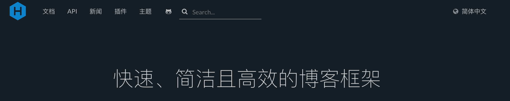
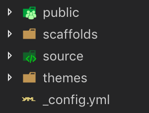

使用hexo搭建Blog
Intro
Hexo 是一个快速、简洁且高效的博客框架。Hexo 使用 Markdown（或其他渲染引擎）解析文章，在几秒内，即可利用靓丽的主题生成静态网页。 –hexo文档

hexo基于node.js和npm。它生成静态页面，对使用者而言高度封装，几乎不需要前端知识，各种已有主题又十分美观，而且切换也十分方便，可以说是个人博客的完美选择。
安装（MacOS）
安装git brew install git
安装npm wget -qO- https://raw.github.com/creationix/nvm/master/install.sh | sh
重启终端 nvm install stable
安装hexo npm install -g hexo-cli
##基础配置
_config.yml包含了博客的大部分配置，配置内容可在文档中查看。

- source 存放文章
- _drafts 存放草稿，默认不显示
- _posts 存放文章
- themes 存放主题
- scaffolds 模版，新建文章时受模版控制
- public 存放生成的html等文件
基础使用
hexo init <folder> 在文件夹中初始化hexohexo new [layout] <title> 新建文章，layout指draft或post，draft为草稿，post为发布的文章hexo generator 将markdown转为静态页面hexo publish [layout] <filename> 发表草稿，将draft中指定的文件转到post中hexo server 启动hexo服务器，默认端口4000，可以通过-p设置hexo clean 清除缓存文件和已经生成的静态文件hexo list 展示网站信息
标签插件
包含大量非Markdown语法，不便迁移，尽量不使用。两个例子：
引用块:1
2
3{% blockquote [author[, source]] [link] [source_link_title] %}
content
{% endblockquote %}
代码块:1
2
3{% codeblock [title] [lang:language] [url] [link text] %}
code snippet
{% endcodeblock %}
主题
官方主题页包含了主题展示和github跳转，按照github项目中README安装即可。
本人使用的是casper的修改版。
所有和主题相关的文件夹都在themes中并且是可以自定义和修改的，主题目录下提供了_config.yml文件。比如图标、logo、favicon等。此外，可以进一步通过修改js和css为你想要的样式。
资源文件夹
如果你的Hexo项目中只有少量图片，那最简单的方法就是将它们放在 source/images 文件夹中。然后通过类似于  的方法访问它们。
的方法访问它们。
对于那些想要更有规律地提供图片和其他资源以及想要将他们的资源分布在各个文章上的人来说，可以通过将 config.yml 文件中的 post_asset_folder 选项设为 true 来打开。
about页面
hexo new page about 创建页面。
修改Front-matter部分，layout为false，comments为false
评论
本人使用了valine，主要工作是取theme文件夹里修改相关的代码。有些主题提供了一些评论系统，直接配置即可。
官方教程过程很简明。先去LeanCloud上注册账号，获取AppKey及AppId，填到评论的js代码中。
最好再配置一下LeanCloud的安全域名，可以保证只有Blog的访问。
分享
其实就是一些a标签，该主题自带，不过是Twitter、脸书及Google的，我自己照着加了一个微博的。代码如下：
1 | <a class="" href="http://service.weibo.com/share/share.php?url=<%- permalink %>" onclick="window.open(this.href, 'weibo-share', 'width=550,height=235');return false;"> |
似乎baidushare也很常用，但是……有点丑。
搭建
铛铛铛～ 终于到激动人心的时候了，上 vps/github.io!
github.io
需要新建一个<github-name>.github.io 的仓库
使用git部署，需要先安装插件： npm install hexo-deployer-git --save
修改config.yml中的deploy部分为
1 | deploy: |
之后执行hexo deploy部署到github上，即可通过仓库名访问。可以自行配置域名，在此不赘述。
vps
vps需要从 Vultr 或者 DigitalOcean 等供应商处租赁，常用的配置价格为5刀/月
部署其实也很简单…… 先安装一个Nginx，记得防火墙开启权限 步骤大致如下（Ubuntu）：
安装nginx apt-get install nginx
防火墙允许 ufw allow "Nginx Full"
然后配置一下nginx，使之能够显示博客站点
创建站点配置文件vi /etc/nginx/conf.d/blog.conf，内容为：1
2
3
4
5
6
7
8
9
10
11
12
13
14
15
16
17
18
19
20
21
22
23server {
listen 80;
listen [::]:80;
root /var/www/blog/html;
index index.html index.htm index.nginx-debian.html;
server_name example.com www.example.com;
access_log /var/log/nginx/blog_access.log;
error_log /var/log/nginx/blog_error.log;
error_page 404 /404.html;
location ~* ^.+\.(ico|gif|jpg|jpeg|png)$ {
root /var/www/blog/html;
access_log off;
expires 1d;
}
location ~* ^.+\.(css|js|txt|xml|swf|wav)$ {
root /var/www/blog/html;
access_log off;
expires 10m;
}
location / {
try_files $uri $uri/ =404;
}
}
修改/etc/nginx/sites-availablelisten 80 default_server;为listen 80;
并在nginx中的http块中添加include /etc/nginx/conf.d/*.conf;和include /etc/nginx/sites-enabled/*;重启nginx并添加开机启动项。
之后配置git钩子 也就是一个空的git仓库，当本地的hexo推送给这个仓库时，会有个脚本执行自动拉取代码。mkdir -p /var/www/blog/html路径用于存放站点git init --bare blog.git创建空仓库cd blog.git/hooks准备创建钩子脚本vi post-receive创建脚本，内容如下：
1 | !/bin/bash |
git checkout -f 会强制拉取代码
本地配置config.yml的deploy部分：1
2
3
4
5deploy:
type: git
repo:
vps: ssh://<username>@<ip>:<port>/var/www/path/to/blog.git
branch: master
这种方式可以配置ssh的端口，其中的username需要可以免密登陆vps。
404
首先需要创建一个自定义404页面，与about页相似 hexo new page 404
修改Front-matter部分，layout为false，permalink为/404.html，comments为false
与/about不同，它会在根目录生成404.html而不是/404/index.html。填入内容即可
对于github pages：检测到根目录的404.html时，会将其作为404页面
对于nginx：修改站点conf，如blog.conf，添加error page条目error_page 404 /404.html;
HTTPS
如今，https也是博客标配了，这里我使用最方便的Let’s Encrypt方案，用其提供的certbot来自动签发证书。之后配合nginx配置https。
配置之前要确保80和443端口是打开的。debian使用的iptables，通过下两行命令实现：1
2iptables -A INPUT -p tcp --dport 80 -j ACCEPT
iptables -A INPUT -p tcp --dport 443 -j ACCEPT
debian安装certbot，并按照提示配置:1
2sudo apt install certbot python-certbot-nginx
sudo certbot --nginx
生成的证书在/etc/letsencrypt/live/$domain目录下。由于证书会在30天后过期，因此，需要使用cron脚本自动更新。如下：0 3 15 * * root certbot renew > /dev/null
每15天凌晨3点更新证书。
certbot在配置完成后，会自动修改你的<server>.conf文件，修改监听443端口并指定证书和私钥的位置。使用nginx -s reload使配置生效，此时访问就已经是https的方式了。
Outro
一整天时间搭建Blog，基本达到心里预期，基本都很简明
后续还有SEO、Google Analysis及全站Https
在反复沮丧中坚持✊